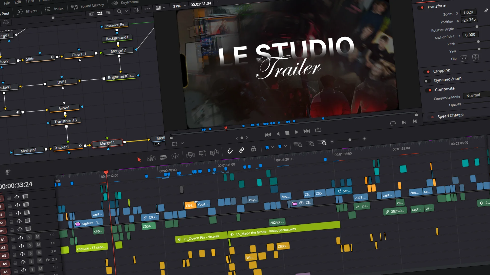

Trailer Le Studio
Épique, intense,
chargé d'émotion.
60 secondes pour tout dire.
Donner envie
en un souffle.
Le Studio avait besoin d'une vidéo de présentation capable de transmettre l'énergie de l'association en quelques secondes. Pas un résumé. Pas un clip corporate. Une cinématique — à la fois épique, intense et pleine d'émotions — qui devait capturer ce qu'on vit quand on fait partie du Studio.
Le trailer a été diffusé le jour de la rentrée, devant l'ensemble des nouveaux étudiants MMI. C'est leur premier contact avec l'association. Il fallait que chaque seconde compte.
Mon rôle
- Montage complet
- Recherche créative
- Direction narrative
Outils
- DaVinci Resolve
- Banques de sons & musiques
- Rushes du Studio
Livrables
- Trailer de présentation (~60s)
Trouver le
bon rythme.
Avant de toucher à la timeline, j'ai passé du temps en recherche : musiques, effets sonores, références visuelles, styles de transitions. L'objectif était de définir une frame narrative cohérente avant de commencer le montage. Chaque choix — le tempo, les cuts, les respirations — devait servir l'émotion.


Chaque coupe
a son intention.
Le montage a été réalisé intégralement sur DaVinci Resolve. J'ai travaillé seul, des rushes bruts au rendu final, en cherchant un équilibre entre énergie et émotion. Les transitions, les effets visuels, le sound design — tout a été pensé pour que la vidéo fonctionne comme une montée en puissance qui ne retombe jamais.